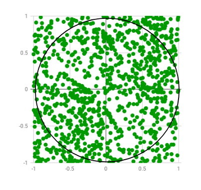

Coding challenge
Tower of Hanoi

The Tower of Hanoi (also called the Tower of Brahma or Lucas' Tower and sometimes pluralized) is a mathematical game or puzzle. It consists of three rods and a number of disks of different sizes, which can slide onto any rod. The puzzle starts with the disks in a neat stack in ascending order of size on one rod, the smallest at the top, thus making a conical shape.
The objective of the puzzle is to move the entire stack to another rod, obeying the following simple rules:
Only one disk can be moved at a time.
Each move consists of taking the upper disk from one of the stacks and placing it on top of another stack or on an empty rod.
No disk may be placed on top of a smaller disk.
With 3 disks, the puzzle can be solved in 7 moves. The minimal number of moves required to solve a Tower of Hanoi puzzle is , where n is the number of disks.
Determinant
Determinants are of those functions that make absolutely no sense when you meet them for the first time. Multiply all the values in a column or row with all values in other columns or row, sum them up … and it works! Let's see how you could implement determinant calculation function!!
Next permutation
Given a totally ordered set, find the next permutation of the current configuration: FADE -> FAED -> FDAE -> FDEA -> ... Total order wiki This tool can quickly become very useful in various competitions when you need to speed your algorithm up. The algorithm itself is simple. Beginning from end, find the longest decreasing sequence 42531 and denote the preceding item as pivot 42531. Swap pivot with the smallest higher item 43521 in the sequence and revert the sequence 43125.
Counting 1-bits
When you write down a positive integer as binary number, how many 1s do you get? For example, 99 = 0b1100011. An obvious solution would be to take a single-bit mask, walk over the number X & (1 << k) and count non-zero results up. But this solution counts both 0s and 1s. Can you do better by only counting 1s and completely ignoring 0s? There’s a ton of beautiful and surprising bit-tricks you can do. Too bad we don’t need them any more.
Eratosthenes sieve
In mathematics, the sieve of Eratosthenes is a simple, ancient algorithm for finding all prime numbers up to any given limit. It does so by iteratively marking as composite (i.e., not prime) the multiples of each prime, starting with the first prime number, 2. The multiples of a given prime are generated as a sequence of numbers starting from that prime, with constant difference between them that is equal to that prime. This is the sieve's key distinction from using trial division to sequentially test each candidate number for divisibility by each prime.
The sieve of Eratosthenes is a beautiful piece. It’s also surprisingly powerful and fast when segmented implementation is applied, on i7 CPU (single-threaded) you can generate prime numbers up to 10⁹ within 1 second.
Binary search
In computer science, binary search, also known as half-interval search, logarithmic search, or binary chop, is a search algorithm that finds the position of a target value within a sorted array. Binary search compares the target value to the middle element of the array. If they are not equal, the half in which the target cannot lie is eliminated and the search continues on the remaining half, again taking the middle element to compare to the target value, and repeating this until the target value is found. If the search ends with the remaining half being empty, the target is not in the array. Even though the idea is simple, implementing binary search correctly requires attention to some subtleties about its exit conditions and midpoint calculation.
Binary search runs in logarithmic time in the worst case, making comparisons, where n is the number of elements in the array, the O is Big O notation, and log is the logarithm. Binary search takes constant space, meaning that the space taken by the algorithm is the same for any number of elements in the array. Binary search is faster than linear search except for small arrays, but the array must be sorted first. Although specialized data structures designed for fast searching, such as hash tables, can be searched more efficiently, binary search applies to a wider range of problems.
There are numerous variations of binary search. In particular, fractional cascading speeds up binary searches for the same value in multiple arrays. Fractional cascading efficiently solves a number of search problems in computational geometry and in numerous other fields. Exponential search extends binary search to unbounded lists. The binary search tree and B-tree data structures are based on binary search.
Monte carlo - π
Monte Carlo methods are a broad class of computational algorithms that rely on repeated random sampling to obtain numerical results. One of the basic examples of getting started with the Monte Carlo algorithm is the estimation of Pi. Randomized simulation should be understood as a random sampling from space of simulations under given distribution. How can we estimate π if the only tool we have at disposal is a good random number generator? When we choose a random coordinate (x, y) in range (-1, 1) and each point has equal chance to be chosen, the probability to hit a circle with unit radius is
Having sufficiently large set of points and a good generator we can get as close as we want according to Chebyshev’s inequality.
Estimation of Pi The idea is to simulate random (x, y) points in a 2-D plane with domain as a square of side 1 unit. Imagine a circle inside the same domain with same diameter and inscribed into the square. We then calculate the ratio of number points that lied inside the circle and total number of generated points. Refer to the image below:

We know that area of the square is 1 unit sq while that of circle is . Now for a very large number of generated points,

that is,

The beauty of this algorithm is that we don’t need any graphics or simulation to display the generated points. We simply generate random pairs and then check if . If yes, we increment the number of points that appears inside the circle. In randomized and simulation algorithms like Monte Carlo, the more the number of iterations, the more accurate the result is. Thus, the title is “Estimating the value of Pi” and not “Calculating the value of Pi”. Below is the algorithm for the method:
The Algorithm
- Initialize circle_points, square_points and interval to 0.
- Generate random point .
- Generate random point .
- Calculate .
- If d <= 1, increment circle_points.
- Increment square_points.
- Increment interval.
- If increment < NO_OF_ITERATIONS, repeat from 2.
- Calculate pi = 4*(circle_points/square_points).
- Terminate.
Karatsuba multiplication
When you multiply two numbers on the paper, you probably follow the good old and naive way. Using Master theorem it is pretty straightforward to show that this algorithm requires multiplications. But there’s actually very clever way to speed the things up.

The middle part of table contains expression AD+BC which requires two multiplications and one O(n) addition. And here is Karatsuba’s idea:

Since we already have AC and BD anyways, we can use only one multiplication and four additions/subtractions to reach overall complexity .
Why don’t we use Karatsuba as replacement of the naive way? Well, for us a subtraction seems to be more difficult, non-intuitive and error-prone than addition. However, for computer there’s no difference.
General theory and advanced algorithms could be seen in: polynomial rings, number theoretic transform, Toom-Cook, Schonhage-Strassen.
McCarthy 91
No doubt it is one of the most useless functions ever, yet, the most profound for causing nightmares of computer science students.
What does is do? When you plug a natural number N in, McCarthy91 flushes N-10 out, if N is larger than 100. Otherwise it always returns 91.
Why should anybody have nightmares? Well, this function is being used as a study case for formal verification. In other words, you don’t have to implement it, you have to prove it is correct and finite, instead.
Roots of the polynomial
Let’s say we want to find roots of the polynomial, e.g. .
While there’s no analytical solution for higher order polynomials, numerical solution is just an application of linear algebra. All we need is to construct a matrix whose characteristic polynomial is the one we are solving.

To get the roots we then find eigenvalues of the matrix.
Extended euclidean algorithm
Extended euclidean algorithm wiki
One of the most fundamentals algorithms in number theory is extended euclidean algorithm. It’s purpose is to solve Diophantine equation
Seriously, every programmer must know this one, I don’t even know what else to say.
Huffman coding
For many years the Huffman coding was state of the art in statistical data compression. Even though it should be noted that the main reason probably was that arithmetic coding was patented.
The idea is very similar to one of Samuel Morse, to create a sparse representation of the data.
Unlike Morse code, Huffman codes have unique prefixes which removes the need for separator and resulting stream has only one way of decoding. Disadvantage is that any error in a single bit can easily break the remaining part of the message. Read the wiki by your own starting from here you are grown enough to look for informations. no more explanations will be provided 3:).
Breaking OTP
Sometimes you read that one-time pad is an unbreakable cipher. And of course, completely broken example is usually attached.
The problem is, people confuse the definition of perfect cipher for unbreakable. If the cipher is perfect (according to Shannon), the probability distribution of obtaining cipher-text instance from different plain-texts must be uniform. In other words, given some cipher-text there is an equal chance for any plain-text to be the source.
What follows is that adversary with infinite computational power can’t get any information about plain-text from pure cipher-text.
But that’s far from unbreakable. Even correctly used OTP can be easily broken. Imagine a bank that would encrypt a digital checks with OTP, how easy would it be to rewrite $100.00 to $999.99 at well-known check position?
Is OPT a perfect cipher? Not in most implementations. While people emphasize the single use of key, they also forget about the uniformity of key distribution which is as important.
When the following messages was generated the one-time rule was violated. The consequences are inevitable.
ciphertext = [
b'm\x99QH\xfc\x99\xcel\xfc>\x11\xf81\xda:\x15"6\xd3b\x07\x7f\xed\x87\xd5\xd4\xf0\xbb',
b'x\x96^\r\xb5\x83\x86u\xeel\x0e\xf8,\xce:\x06 6\xd0b\nx\xfd\x87\xd9\xc9\xe8',
b'm\x90O^\xfc\x80\xd3f\xe7>\x16\xf46\x89w\x05r8\xcb-\x04',
b'`\x97O\r\xbd\x9f\xc3%\xe1q\x0e\xb15\xdbu\x0e5y\xca*\x1c7\xec\xc2\xd2\xcb',
b"m\x90[Y\xfc\x80\xdf%\xeb\x7f\x03\xe2b\xc1{\x167y\xdf'\x16y\xa8\xc6\x97\xc2\xed\xa9p(",
b'`\x9dN\r\xb5\x8b\x86m\xe0n\x1f\xb1*\xc8i@45\xd25\x1d7\xe9\xd0\xd6\xdf',
b'p\x96\x1aL\xfc\x83\xcfb\xe7jZ\xfe0\x89s\x0er8\x9d&\x12n',
b'p\x96\x1aL\xfc\x9b\xcfv\xe6q\x14\xb1-\xdb:\t<y\xd3-\x1dr',
b'p\x8b\x1aD\xa8\xcd\xd2m\xeal\x1f\xf7-\xdb\x7f@&1\xd8b\x1fr\xfb\xd4\x97\xc1\xf0\xa2t',
b'x\x94V\r\xa8\x85\xc7q\xafi\x1f\xb11\xcc\x7f@=+\x9d1\x16r\xe5',
b'p\x8b\x1aO\xa9\x99\x86d\xafz\x08\xf4#\xc4:\x17;-\xd5+\x1d7\xe9\x87\xd3\xd4\xfa\xad|',
b'p\xd8IY\xbd\x83\xc2%\xees\x13\xf5b\xddr\x05r+\xd2#\x01',
b'v\x9e\x1aL\xfc\x9e\xd3w\xe9>\x0e\xfe0\xc4\x7f\x0e&<\xd9b\x00\x7f\xe7\xd5\xd2',
b'x\x96^\r\x95\xcd\xcej\xe3zZ\xe6+\xddr\t<y\xd0;S\x7f\xe9\xc9\xd3',
b"~\x8a[D\xb2\x9e\x86j\xe9>\x0e\xf9'\x89}\x0f>=\xd8,Sd\xe9\xc9\xd3",
b'q\x97M\r\xba\x88\xd1%\xf6{\x0e\xb1*\xc6m@&1\xd8;St\xfa\xc2\xd2\xd6',
b'm\x90HB\xa9\x8a\xce%\xe2gZ\xf7+\xc7}\x05 *\x9d6\x1c7\xfc\xcf\xd2\x86\xfb\xa9t5',
b'n\x90SA\xb9\xcd\xcf%\xf8{\x1f\xe1b\xder\t><\x9d\x0bS`\xed\xc2\xc7',
b'9\xd8_I\xbb\x8c\xd4%\xeer\x16\xf0,\x89j\x0f7y\x9dbS7\xa8\x87\x97\x86\xbf',
]
A little help: if you decipher the code the result will be something like the following
['take?this kiss upon?t',
'and ?n parting from?y',
'thus?much let me av?w',
'you ?re not wrong w?o',
'that?my days have b?e',
'yet ?f hope has flo?n',
'in a?night or in a ?a',
'in a?vision or in n?n',
'is i? therefore the?l',
'all ?hat we see or ?e',
'is b?t a dream with?n',
'i st?nd amid the ro?r',
'of a?surf tormented?s',
'and ? hold within m? ',
'grai?s of the golde? ',
'how ?ew yet how the? ',
'thro?gh my fingers ?o',
'whil? i weep while ? ',
' ed?ar allan poe ? ']
No-condition swap
Another piece from a bit-trick family. How to swap two integers if you can’t use any condition?
It is not an algorithm for daily use. The idea is rather proof of concept that it is indeed possible. Similar tricks are used by compiler during code optimizations to spare few more ticks of CPU time.
So the goal is to write a function to swap two integers without using any condition statement.
Perceptron
Perceptron is a beautiful statistical learning device for classification. Perceptron is very simple to implement, it is an on-line algorithm, but what’s most important, it is a combination of mathematical function, learning algorithm and a proof of the algorithm correctness when applied on linearly separable sets.

Monopoly
Playing Monopoly, what is the probability that you step at position #24 during the first round?
Law of total probability says that the chance to step on certain position is sum of disjoint events of how we could get there. In this case, we get at #24 if we tossed 1 while standing at #23, or we tossed 2 while standing at #22, … or we tossed 6 while standing at #18. This leads to a recursive formula.
It looks quite familiar, doesn’t it? Right, Fibonacci numbers.
Strategy to choose? I advice you to use Dynamic programming.
K-means
Very easy, yet very power technique used in unsupervised learning is k-means clustering.
K-means first chooses some random clusters. Then assigns each point to the nearest cluster using L2 measure and computes a new cluster center as mean of all the points inside. These two steps are repeated until convergence.

pros
- algorithm is guaranteed to converge
- is very fast, works well even on a subsample
- is generic; initial clusters, distance measure and center definition may be adapted to your needs
cons
- number of clusters has to be specified manually, it’s detection is very difficult
- result tends to be very unstable — which means very — you should re-run many times and choose the best result.